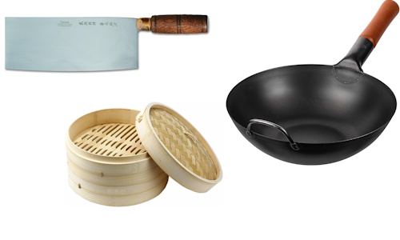
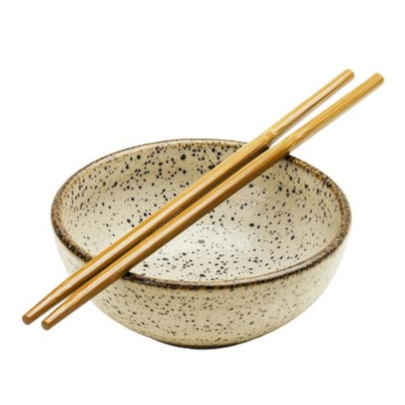

Usos y costumbres
No solo los ingredientes y los platos son distintos para nuestra cultura, la forma de comer tiene sus particularidades. Se come con utensillos distintos, se sirve de otra manera, se come en un orden similar, y hay una etiqueta peculiar y hasta chocante para nuestro lado del mundo.
Utensillos
Para cocinar
Los utensillos propios de la cocina china pueden sustituirse por los que solemos utilizar nosotros, ya que todos encuentran facilmente un equivalente en nuestras cocinas, a excepcion del wok y de las cestas de bambú para la cocción al vapor. Los principales utensillos para cocinar en china son:
- Wok
- Cestas de bambú
- El cuchillo chino
- El cucharón de rejilla
- La cuchara de madera
- La espátula de acero
- El cucharón

Para comer
A la hora de comer se utilizan los palillos como cubierto básico. Pueden ser de madera, marfil, baquelita o plástico. Algunos alimentos se sirven en cuencos individuales y otros se sirven en el centro de la mesa para compartir. Se suele beber té en tazas sin asas.

Estructura
La comida tiene una "estructura horizontal" mientras la nuestra es "vertical". Nosotros servimos un plato y lo comemos, y repetimos hasta pasar por todos los platos. En china, los platos se sirven al mismo tiempo. Se comienza por los platos frío, luego los platos calientes acompañados de arroz con carne, pescado o verdura, luego el postre, y al final se ofrece caldo o sopa. El cuchillo no aparece nunca en las mesas chinas. Cada fuente está a disposición de todos los invitados, que se sirven directamente con sus palillos.
Etiqueta
Nunca debe haber flores sobre la mesa y no se deben regalar a la anfitriona. Los palillos nunca deben dejarse apoyados en el plato, sino en el mantel o en los palilleros adecuados. Dejarlos clavados en el cuenco de arroz es un signo de hostilidad hacia el afitrión. A diferencia de las costumbres occidentales, es de buen gusto mostrarse muy ruidoso en la mesa, para demostrarle al dueño de la casa la gratitud que se siente al saborear la comida que ha preparado.